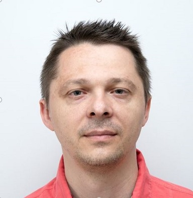

Аналитик со смыслом

Технический руководитель с 25-летним опытом полного жизненного цикла продукта: от идеи и прототипирования → до серийного производства, эксплуатации и сервиса.
Психологический профиль
• Якоря карьеры: Служение (44 балла)
• Установки (Потёмкина): Доминанта — Альтруизм & Свобода; Драйверы — Труд & Результат
• Тип личности (ДДО): Человек-Знак (7 баллов) — работа с информацией, кодами, систематизацией и расчётами
Главная ценность — направлять интеллектуальный ресурс на решение общественно значимых задач и приносить реальную пользу людям и бизнесу.
Моё увлечение визуальным творчеством началось более 45 лет назад с фотографии. Сегодня — видео, монтаж и локальный искусственный интеллект.